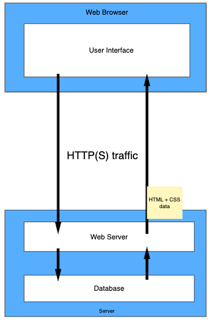

Asynchronous - interact with the server in the background without blocking any other events from happening on the web page.
JavaScript - the engine behind AJAX
XML - Response type used in the old days, now it’s largely replaced by JSON
AJAX Flow
Pre-AJAX Flow - refreshes the page whenever a request is made. Doesn’t allow any user interaction while request is happening.
Pre-AJAX Flow
AJAX Flow - makes a request asynchronously and allows user interaction with other parts of the webpage while request is loading. Doesn’t cause a refresh